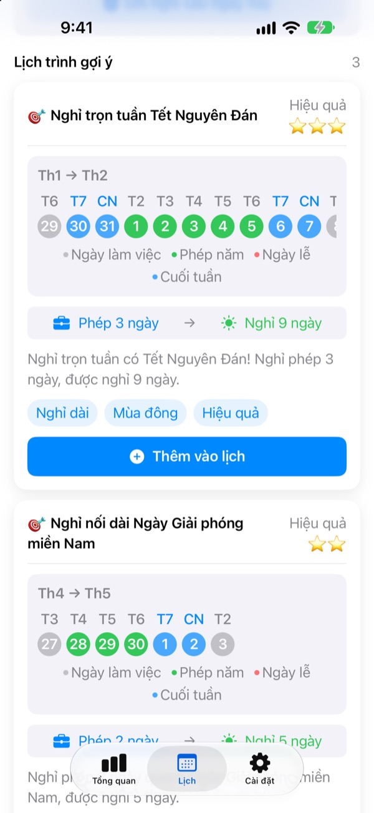
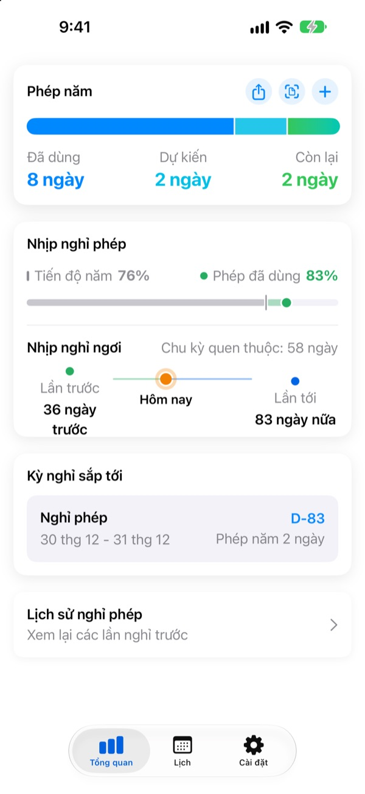
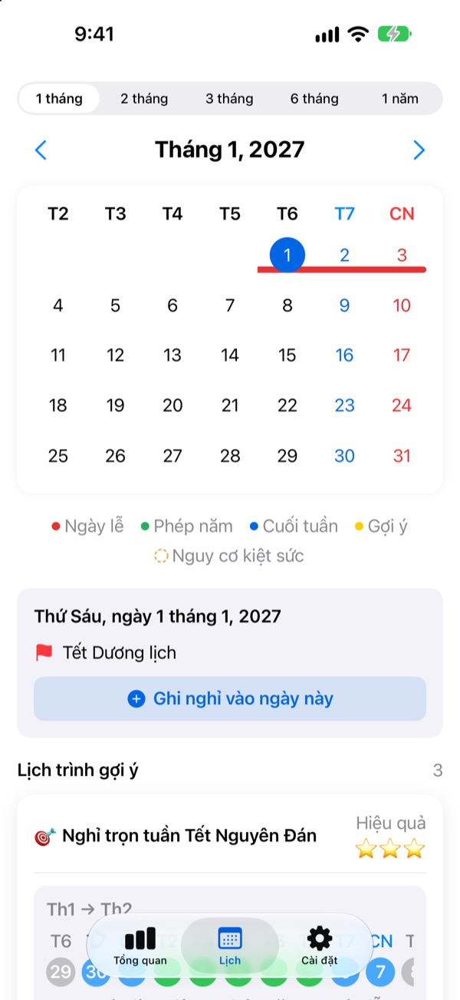
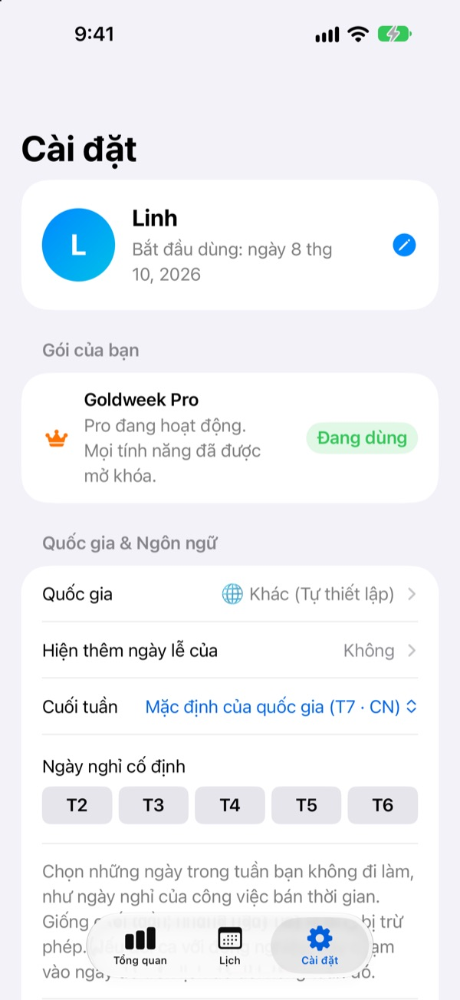

Xin nghỉ ít ngày,
được nghỉ dài
Goldweek ghép ngày lễ với cuối tuần và chỉ rõ nên xin nghỉ phép vào ngày nào để được nghỉ liền dài nhất. Không cần lật lịch từng trang ngồi đếm nữa.
Tải miễn phí. Ghi phép và xem gợi ý vẫn luôn miễn phí.

Mệt vì ngồi đếm ngày trên lịch?
Thứ Năm là ngày lễ, có nên xin nghỉ thêm thứ Sáu? Hay để dành nối với kỳ nghỉ dài tháng sau? Lật lịch qua lại mãi rồi cuối cùng xin nghỉ đại một ngày, đến cuối năm số phép còn lại cứ thế mất. Goldweek tính giúp bạn và cho thấy những ngày giúp phép năm kéo dài nhất.
Phép còn lại thấy ngay
Tổng số, đã dùng và còn lại nằm gọn trên một màn hình. Bên cạnh là năm nay đã trôi qua bao nhiêu so với số phép đã dùng, để bạn biết ngay mình có đang để dành quá nhiều không.
Không cần mở ứng dụng, widget trên màn hình chính cho thấy số phép còn lại và kỳ nghỉ sắp tới.

Ghi phép ngay trên lịch
Ngày lễ, ngày phép và kỳ nghỉ gợi ý hiện bằng màu trên lịch. Chạm vào ngày để thêm hoặc sửa ngày nghỉ, kể cả nửa ngày, một phần tư ngày hay theo giờ.
Bạn cũng có thể chụp màn hình lịch sử nghỉ phép của công ty để nhập dữ liệu cũ một lần.

Theo quốc gia và cách làm việc của bạn
Có ngày lễ của 42 quốc gia ở châu Á, châu Âu và châu Mỹ. Nơi nào ngày lễ khác nhau theo bang hay vùng thì chọn vùng của bạn. Quốc gia chưa có trong danh sách, như Việt Nam, bạn có thể tự thêm ngày lễ.
Bạn cũng chọn được ngày cuối tuần, ngày đầu tuần và kiểu làm việc cố định, bán thời gian hay theo ca.

Bắt đầu với 3 bước
- 1
Cho biết nơi bạn làm việc
Lần đầu mở, chọn quốc gia và số ngày phép mỗi năm, hoặc tự thêm ngày lễ nếu chưa có quốc gia của bạn.
- 2
Chọn một gợi ý
Trong tab Lịch có các kỳ nghỉ gợi ý. Thêm cái bạn thích vào lịch trình.
- 3
Ghi lại ngày nghỉ
Chạm vào ngày hoặc nhập lịch sử nghỉ từ ảnh.
Cách tính
- Nghỉ cả ngày
- Trừ 1 ngày
- Nửa ngày
- Trừ 0,5 ngày
- Một phần tư ngày
- Trừ 0,25 ngày
- Theo giờ
- Tính theo số giờ làm của ngày đó
- Nghỉ ốm, nghỉ việc riêng có lương, công tác
- Không trừ vào phép năm
- Phép thưởng
- Ngày nghỉ bù, nghỉ thưởng được cấp thêm, quản lý riêng kèm hạn dùng (Pro)
Số ngày phép mỗi năm và tháng bắt đầu năm phép có thể đổi bất cứ lúc nào trong Cài đặt.
Nghỉ ngơi đúng cách thì miễn phí, nhờ lên kế hoạch mới trả phí
Miễn phí
- Ghi nghỉ cả ngày, nửa ngày, một phần tư ngày, theo giờ và phép còn lại
- Ngày lễ của 42 quốc gia, ngày lễ riêng và kỳ nghỉ học
- Xem mọi gợi ý năm nay, thêm tối đa 3 vào lịch
- Nhắc khoảng cách nghỉ ngơi, thông báo và widget
- Thêm ngày nghỉ từ ảnh
- Sao lưu iCloud và chia sẻ lịch với gia đình
Plus và Pro
- Plus: Kế hoạch nghỉ phép tối ưu cả năm
- Plus: Thêm gợi ý không giới hạn, xem cả năm trước và năm sau
- Plus: Gửi ngày nghỉ sang ứng dụng Lịch
- Pro: Mọi thứ của Plus, thêm Phép thưởng, hạn mức năm và chuyển phép theo loại
- Pro: Nhập lịch học của trường, tự nhận diện lịch
- Pro: Nghỉ cùng cả nhà và ngày kỷ niệm gia đình
Mỗi gói có thể chọn đăng ký theo năm hoặc mua một lần dùng trọn đời.
Gói năm tự gia hạn nếu không tắt ít nhất 24 giờ trước khi hết kỳ. Quản lý bất cứ lúc nào trong Cài đặt > Tài khoản Apple > Đăng ký.
Câu hỏi thường gặp
Số phép tính chưa đúng.
Hãy kiểm tra trong Cài đặt tháng bắt đầu năm phép và tổng số ngày phép. Nửa ngày (0,5) và một phần tư ngày (0,25) được trừ tự động, còn các loại không trừ phép như nghỉ ốm, nghỉ việc riêng có lương hay công tác thì không ảnh hưởng số phép còn lại. Nếu vẫn chưa đúng, hãy gửi email cho chúng tôi.
Ngày nghỉ không hiện trên lịch.
Ngày nghỉ đã hủy sẽ không hiện trên lịch. Hãy kiểm tra trạng thái của mục đó trong Quản lý nghỉ phép. Cập nhật lên phiên bản mới nhất cũng có thể giúp.
Thêm Phép thưởng thế nào?
Chạm + trong tab Tổng quan để mở Quản lý nghỉ phép, rồi dùng mục Phép thưởng ở phía dưới. Chọn loại (nghỉ bù, nghỉ thưởng, nghỉ dưỡng sức…), nhập số ngày và hạn dùng (không bắt buộc). Phép thưởng được quản lý riêng với phép năm thông thường.
Đã mua nhưng tính năng chưa mở.
Chạm Khôi phục giao dịch ở cuối tab Cài đặt. Giao dịch được khôi phục bằng Tài khoản Apple đang đăng nhập App Store. Nếu vẫn không được, hãy gửi email cho chúng tôi.
Xóa ứng dụng có mất dữ liệu không?
Dữ liệu lưu trên máy, nên xóa ứng dụng là mất hết. Hãy bật Sao lưu iCloud để giữ một bản có thể khôi phục sau này.
Có tự thêm hoặc ẩn ngày lễ được không?
Được. Vào Ngày lễ & Kỳ nghỉ học trong Cài đặt để thêm ngày lễ của riêng bạn hoặc ẩn ngày lễ mặc định.
Hỗ trợ những quốc gia nào?
Goldweek có ngày lễ của 42 quốc gia. Chọn quốc gia trong Cài đặt (và vùng, với nơi ngày lễ khác nhau theo vùng), lịch sẽ cập nhật ngay. Hiện chưa có sẵn ngày lễ Việt Nam: bạn có thể tự thêm, hoặc gửi góp ý trong ứng dụng để đề nghị hỗ trợ.
Dữ liệu của tôi lưu ở đâu?
Những gì bạn nhập chỉ nằm trên máy và iCloud của chính bạn. Nhà phát triển chỉ nhận thống kê sử dụng ẩn danh, chẩn đoán lỗi ẩn danh và góp ý do bạn tự gửi.
Vấn đề chưa được giải đáp ở trên, ý tưởng hay lỗi, xin gửi đến leeo@kakao.com. Chúng tôi thường trả lời trong 1 đến 2 ngày làm việc.